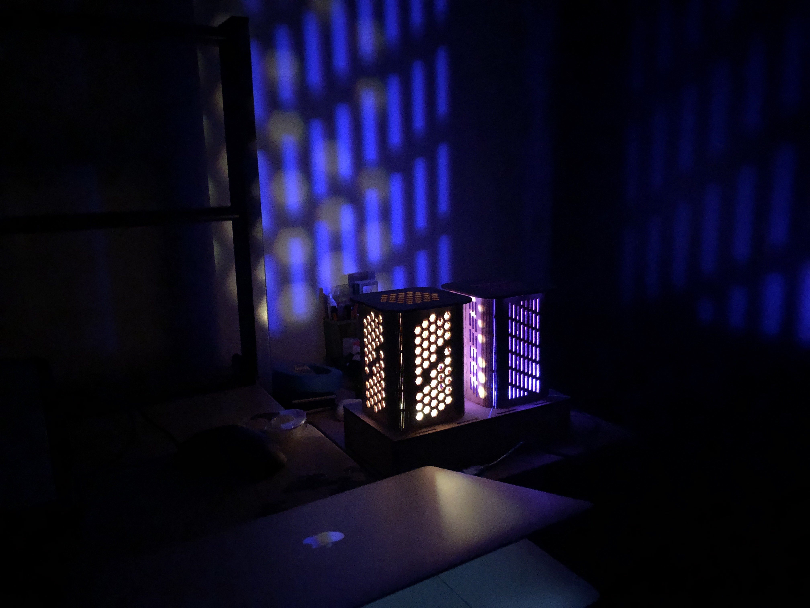
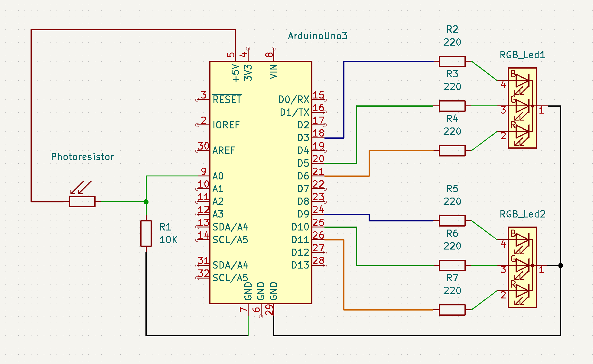
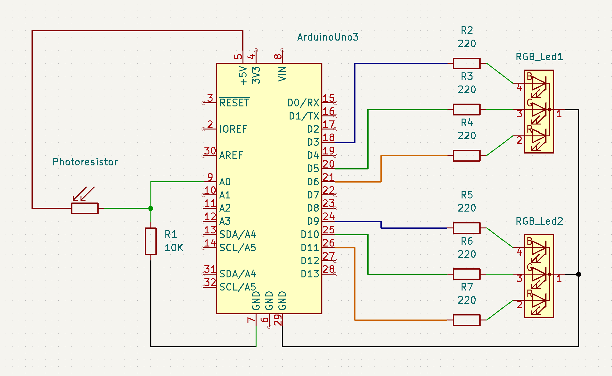
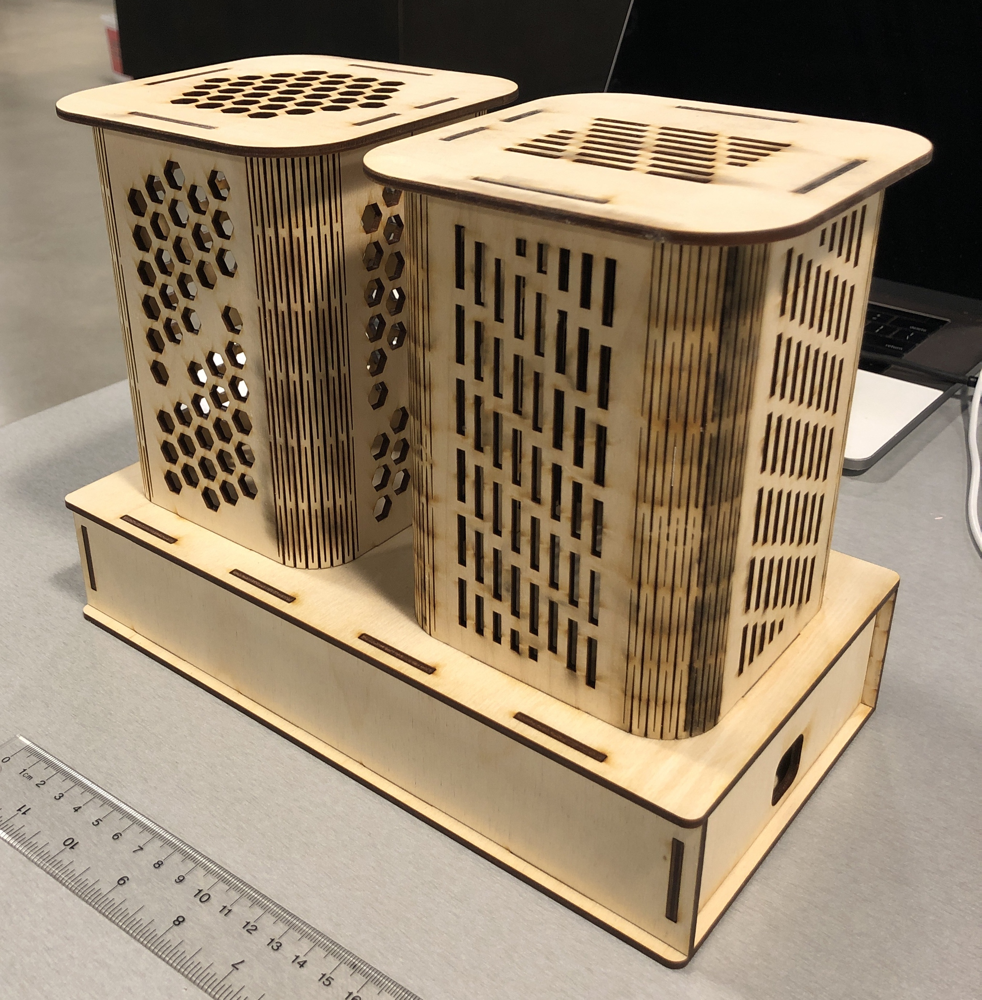
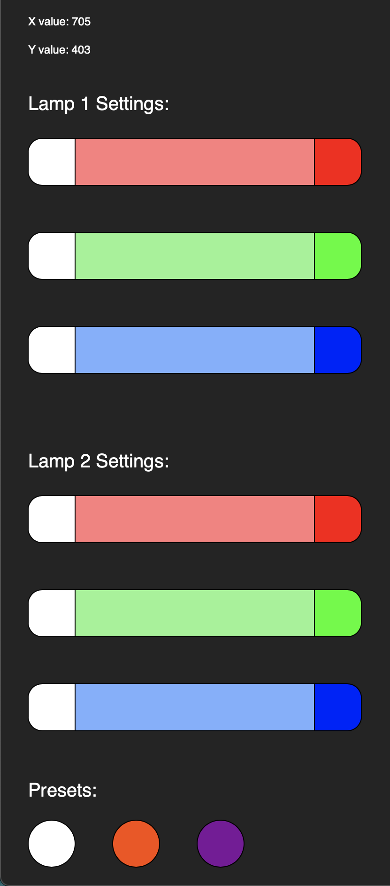
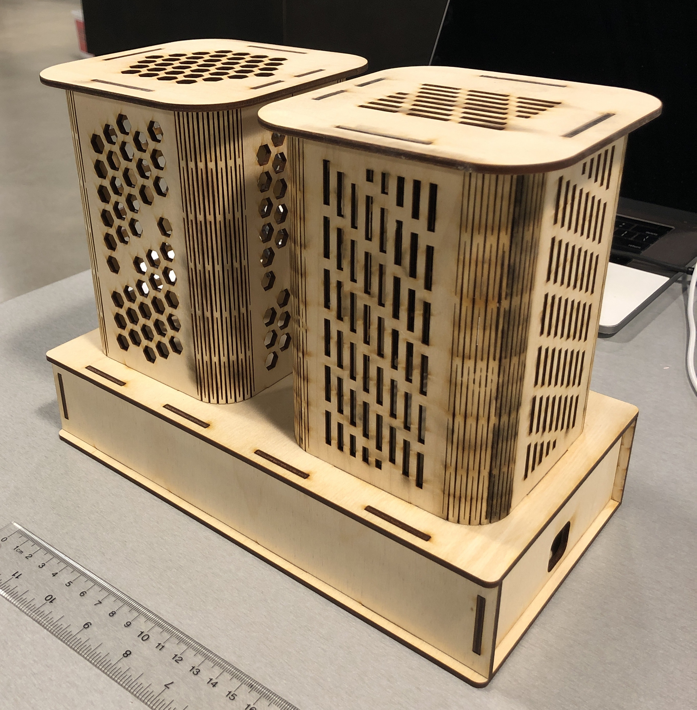
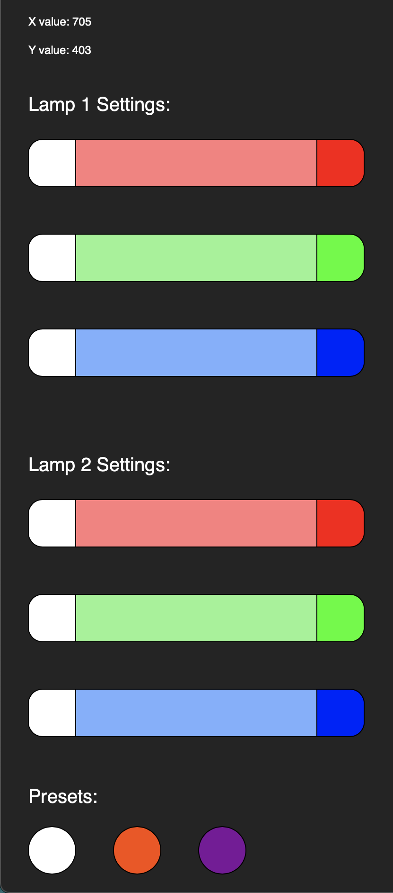

Richard's Final Project!

Here is all the documentation for the Final Project - Twin LED Night Lights!
Breadboard, box, and webpage setup.
 



 



For the final project, I wanted to make a night lamp that turns on automatically once the room is dark enough. Furthermore,
I wanted the colours of the lamps to be controllable, so I built an interface using p5.js so users can play around with the
settings. The p5 side will take the user input (mouse movement and hitting the ENTER key) and send the Arduino side a value,
which tells Arduino which lamp and which colour requires updating.
I used two RGB LEDs, a Photoresister, six 220 ohms resistors, one 10k ohms resistor, and some female and male wires.
For the structure of the LED lamp, I laser cut 3mm thick birch boards into the needed sides to form the base box and
used living hinges to create the lamp shades. I also cut patterns onto the lamp shade so the LEDs can print a pattern
onto the walls after being lit up.
RGB LED calculations:
R = V / I
R = (5 - 1.8) / 0.02 = 160 (Green and Red LEDs)
R = (5-3.4) / 0.02 = 80 (Blue LED)
I have chosen to use a 220 ohm resistor for all 3 legs as it will keep the current in the circuit under the
recommended amount.
I used the 10k ohms resistor with the Photoresister to also limit the current.
Code for the LED Night Lamp web interface through p5:
function setup() {
serial = new p5.SerialPort(); // make a new instance of the serialport library
serial.on('list', printList); // set a callback function for the serialport list event
serial.on('connected', serverConnected); // callback for connecting to the server
serial.on('open', portOpen); // callback for the port opening
serial.on('data', serialEvent); // callback for when new data arrives
serial.on('error', serialError); // callback for errors
serial.on('close', portClose); // callback for the port closing
serial.list(); // list the serial ports
serial.open('/dev/tty.usbmodem14101'); // opens this serial port (Changes sometimes)
createCanvas(1679, 945);
//background(0x08, 0x16, 0x40);
}
// get the list of ports:
function printList(portList) {
// portList is an array of serial port names
for (var i = 0; i < portList.length; i++) {
// Display the list the console:
print(i + " " + portList[i]);
}
}
function serverConnected() {
print('connected to server.');
}
function portOpen() {
print('the serial port opened.')
}
function serialError(err) {
print('Something went wrong with the serial port. ' + err);
}
function portClose() {
print('The serial port closed.');
}
function serialEvent() {
}
// Pressing the ENTER key sends a certain value to the arduino side if specific cases are met
function keyPressed() {
// Check if key pressed is ENTER, if it is, check Y cords, then check X cords.
if (keyCode === ENTER) {
// Lamp 1 Red cases
if (mouseY >= 150 && mouseY <= 200) {
if (mouseX >= 30 && mouseX <= 80) {
serial.write(1);
} else if (mouseX >= 335 && mouseX <= 385) {
serial.write(2);
} else if (mouseX > 80 && mouseX < 335) {
const brightness = float(map(mouseX, 81, 334, 15, 54));
serial.write(brightness);
}
}
// Lamp 1 Green cases
else if (mouseY >= 250 && mouseY <= 300) {
if (mouseX >= 30 && mouseX <= 80) {
serial.write(3);
} else if (mouseX >= 335 && mouseX <= 385) {
serial.write(4);
} else if (mouseX > 80 && mouseX < 335) {
const brightness = float(map(mouseX, 81, 334, 55, 94));
serial.write(brightness);
}
}
// Lamp 1 Blue cases
else if (mouseY >= 350 && mouseY <= 400) {
if (mouseX >= 30 && mouseX <= 80) {
serial.write(5);
} else if (mouseX >= 335 && mouseX <= 385) {
serial.write(6);
} else if (mouseX > 80 && mouseX < 335) {
const brightness = float(map(mouseX, 81, 334, 95, 134));
serial.write(brightness);
}
}
// Lamp 2 Red cases
else if (mouseY >= 530 && mouseY <= 580) {
if (mouseX >= 30 && mouseX <= 80) {
serial.write(7);
} else if (mouseX >= 335 && mouseX <= 385) {
serial.write(8);
} else if (mouseX > 80 && mouseX < 335) {
const brightness = float(map(mouseX, 81, 334, 135, 174));
serial.write(brightness);
}
}
// Lamp 2 Green cases
else if (mouseY >= 630 && mouseY <= 680) {
if (mouseX >= 30 && mouseX <= 80) {
serial.write(9);
} else if (mouseX >= 335 && mouseX <= 385) {
serial.write(10);
} else if (mouseX > 80 && mouseX < 335) {
const brightness = float(map(mouseX, 81, 334, 175, 214));
serial.write(brightness);
}
}
// Lamp 2 Blue cases
else if (mouseY >= 730 && mouseY <= 780) {
if (mouseX >= 30 && mouseX <= 80) {
serial.write(11);
} else if (mouseX >= 335 && mouseX <= 385) {
serial.write(12);
} else if (mouseX > 80 && mouseX < 335) {
const brightness = float(map(mouseX, 81, 334, 215, 254));
serial.write(brightness);
}
}
// Presets
else if (mouseY >= 875 && mouseY <= 925) {
if (mouseX >= 30 && mouseX <= 80) {
serial.write(0);
} else if (mouseX >= 120 && mouseX <= 170) {
serial.write(13);
} else if (mouseX >= 210 && mouseX <= 260) {
serial.write(14);
}
}
}
}
// Interface UI
function draw() {
// Background and text
background(color(36, 36, 36));
fill(255);
textSize(12);
text("X value: " + mouseX, 30, 30);
text("Y value: " + mouseY, 30, 60);
// Lamp 1 Text
textSize(20);
text("Lamp 1 Settings:", 30, 120);
// Lamp 1 Red
fill(255);
rect(30, 150, 50, 50, 15, 0, 0, 15);
fill(255, 125, 125);
rect(80, 150, 255, 50);
fill(255, 0, 0);
rect(335, 150, 50, 50, 0, 15, 15, 0);
// Lamp 1 Green
fill(255);
rect(30, 250, 50, 50, 15, 0, 0, 15);
fill(145, 245, 145);
rect(80, 250, 255, 50);
fill(0, 255, 0);
rect(335, 250, 50, 50, 0, 15, 15, 0);
// Lamp 1 Blue
fill(255);
rect(30, 350, 50, 50, 15, 0, 0, 15);
fill(125, 175, 255);
rect(80, 350, 255, 50);
fill(0, 0, 255);
rect(335, 350, 50, 50, 0, 15, 15, 0);
// Lamp 2 Text
fill(255);
text("Lamp 2 Settings:", 30, 500);
// Lamp 2 Red
fill(255);
rect(30, 530, 50, 50, 15, 0, 0, 15);
fill(255, 125, 125);
rect(80, 530, 255, 50);
fill(255, 0, 0);
rect(335, 530, 50, 50, 0, 15, 15, 0);
// Lamp 2 Green
fill(255);
rect(30, 630, 50, 50, 15, 0, 0, 15);
fill(145, 245, 145);
rect(80, 630, 255, 50);
fill(0, 255, 0);
rect(335, 630, 50, 50, 0, 15, 15, 0);
// Lamp 2 Blue
fill(255);
rect(30, 730, 50, 50, 15, 0, 0, 15);
fill(125, 175, 255);
rect(80, 730, 255, 50);
fill(0, 0, 255);
rect(335, 730, 50, 50, 0, 15, 15, 0);
// Presets
fill(255);
text("Presets:", 30, 850);
ellipse(55, 900, 50, 50);
fill(250, 75, 0);
ellipse(145, 900, 50, 50);
fill(125, 0, 155);
ellipse(235, 900, 50, 50);
}
Code for the Arduino side:
int aB = 9; // Set Blue1 to pin 9
int aG = 10; // Set Green1 to pin 10
int aR = 11; // Set Red1 to pin 11
int bB = 3; // Set Blue2 to pin 3
int bG = 5; // Set Green2 to pin 5
int bR = 6; // Set Red2 to pin 6
int aBc = 100; // Initialize variable for lamp 1 blue as 100
int aGc = 100; // Initialize variable for lamp 1 green as 100
int aRc = 100; // Initialize variable for lamp 1 red as 100
int bBc = 100; // Initialize variable for lamp 2 blue as 100
int bGc = 100; // Initialize variable for lamp 2 green as 100
int bRc = 100; // Initialize variable for lamp 2 red as 100
/* Loop through pin 4 - 11 to initiate them all as outputs */
void setup() {
Serial.begin(9600);
for (int i = 3; i < 12; i++) {
pinMode(i, OUTPUT);
}
}
void loop() {
// Reads the current brightness and saves it as an int
int brightness = analogRead(A0);
// Serial.println(brightness);
// If the brightness level is above 100 (the room is moderately or very bright), write 0 for all lamps and colours.
if (brightness >= 100) {
analogWrite(aB, 0);
analogWrite(aG, 0);
analogWrite(aR, 0);
analogWrite(bB, 0);
analogWrite(bG, 0);
analogWrite(bR, 0);
} else if (brightness < 100) { // If the brightness is lower than 100 (dark room), do the following:
// If the serial port has data to be read: From the p5 side, if a certain case is met, serial will write a value
// between 0-255 (one byte worth). Arduino will take that value and map it to specific cases, changing the colours
// of either or both lamps and for each of their colours (red, green, blue).
if (Serial.available() > 0) {
int inByte = Serial.read(); // Takes the serial write value and saves it as an int
// Values 0-14 are mapped as linear one function cases. (eg, reading value 1 sets the red of Lamp 1 to 0).
// Values 15-255 are mapped as six 40 increment segments for each colour's 1-254 intensity value.
// E.g. 15-54 is mapped to Lamp 1 red's intensity of 1-254.
// Lamp 1 Red cases
if (inByte == 1) {
aRc = 0;
} else if (inByte == 2) {
aRc = 255;
} else if (inByte >=15 && inByte <= 54) {
aRc = map(inByte, 15, 54, 1, 254);
}
// Lamp 1 Green cases
else if (inByte == 3) {
aGc = 0;
} else if (inByte == 4) {
aGc = 255;
} else if (inByte >= 55 && inByte <= 94) {
aGc = map(inByte, 55, 94, 1, 254);
}
// Lamp 1 Blue cases
else if (inByte == 5) {
aBc = 0;
} else if (inByte == 6) {
aBc = 255;
} else if (inByte >= 95 && inByte <= 134) {
aBc = map(inByte, 95, 134, 1, 254);
}
// ---------------------------------------------------
// Lamp 2 Red cases
if (inByte == 7) {
bRc = 0;
} else if (inByte == 8) {
bRc = 255;
} else if (inByte >=135 && inByte <= 174) {
bRc = map(inByte, 135, 174, 1, 254);
}
// Lamp 2 Green cases
else if (inByte == 9) {
bGc = 0;
} else if (inByte == 10) {
bGc = 255;
} else if (inByte >= 175 && inByte <= 214) {
bGc = map(inByte, 175, 214, 1, 254);
}
// Lamp 2 Blue cases
else if (inByte == 11) {
bBc = 0;
} else if (inByte == 12) {
bBc = 255;
} else if (inByte >= 215 && inByte <= 254) {
bBc = map(inByte, 215, 254, 1, 254);
}
// Presets
else if (inByte == 0) { // Resets both lamps to white
aRc = 100;
aGc = 100;
aBc = 100;
bRc = 100;
bGc = 100;
bBc = 100;
} else if (inByte == 13) { // Sets Lamp 1 to amber
aRc = 250;
aGc = 75;
aBc = 0;
} else if (inByte == 14) { // Sets lamp 2 to magenta
bRc = 125;
bGc = 0;
bBc = 155;
}
// When there is no serial data or after reading a serial data, display the saved colour schematic for each lamp
// and colour
} else {
// Lamp 1
analogWrite(aR, aRc);
analogWrite(aG, aGc);
analogWrite(aB, aBc);
// Lamp 2
analogWrite(bR, bRc);
analogWrite(bG, bGc);
analogWrite(bB, bBc);
}
}
}